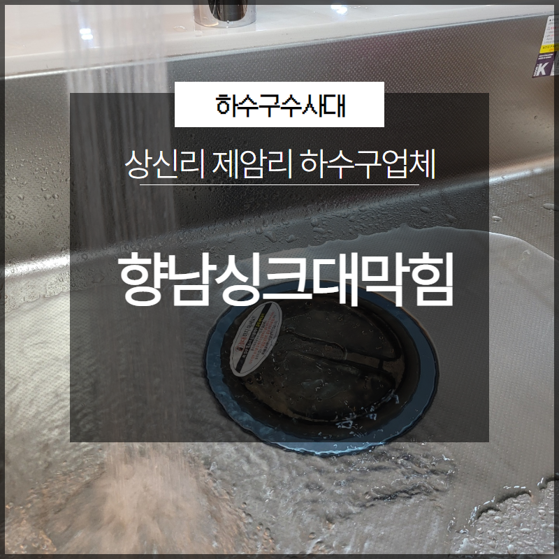
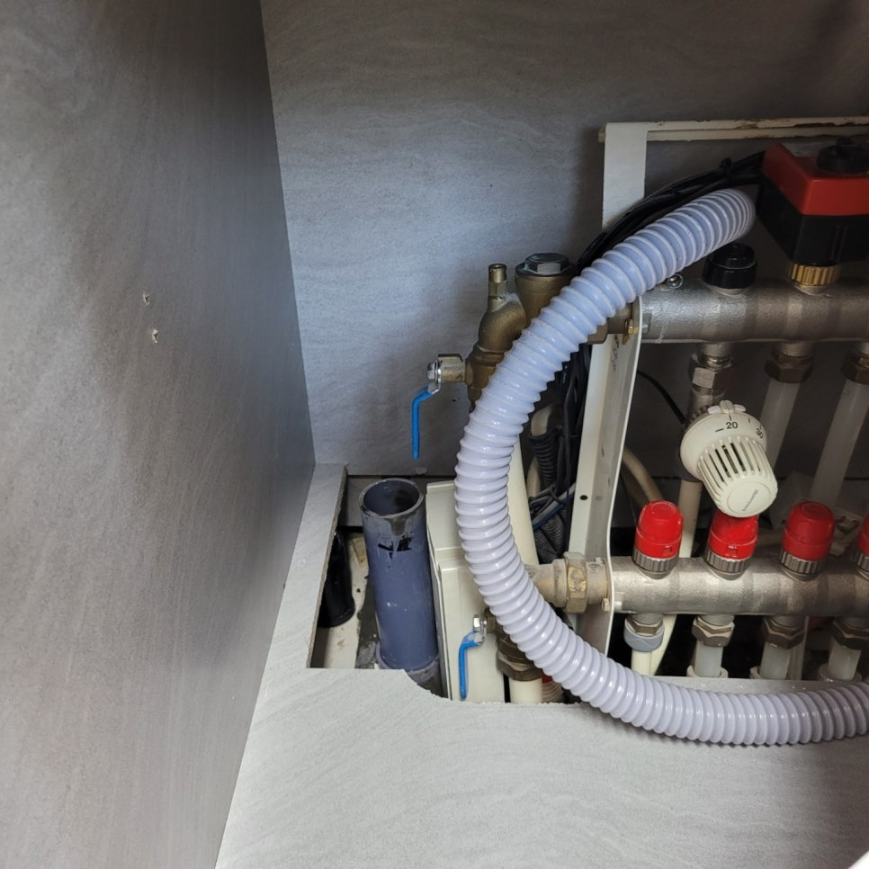
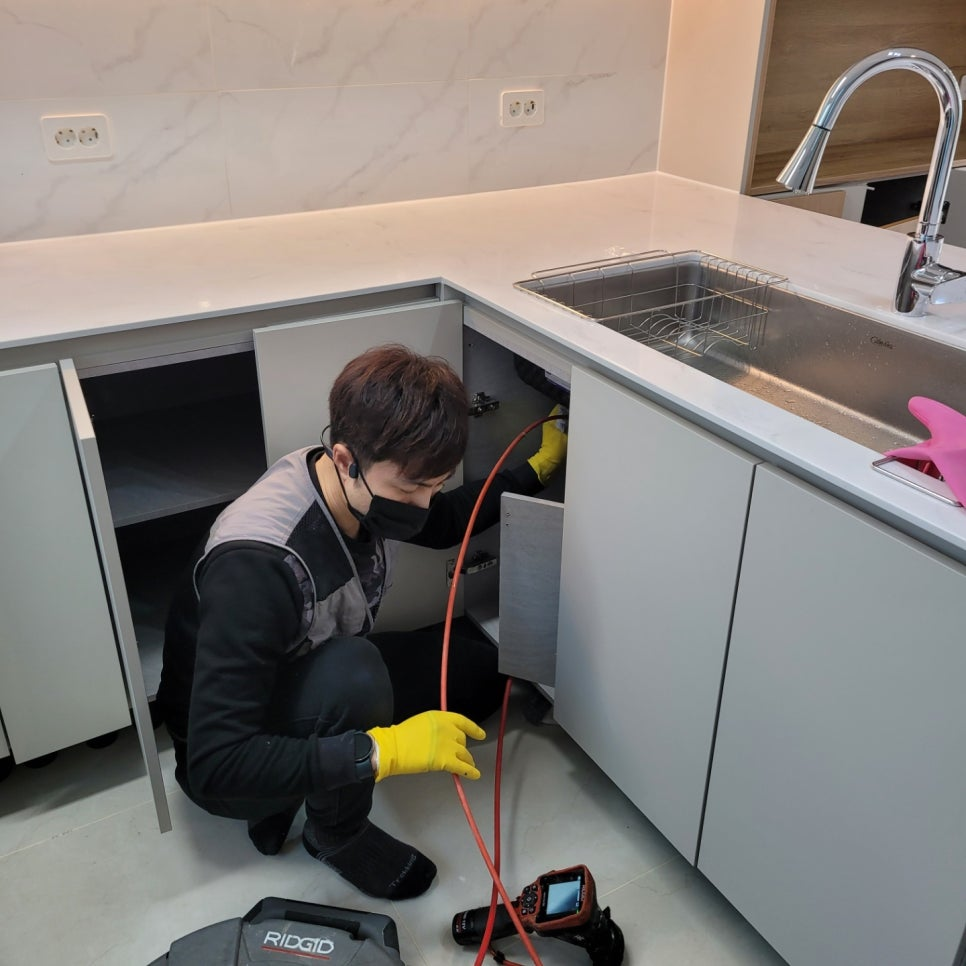
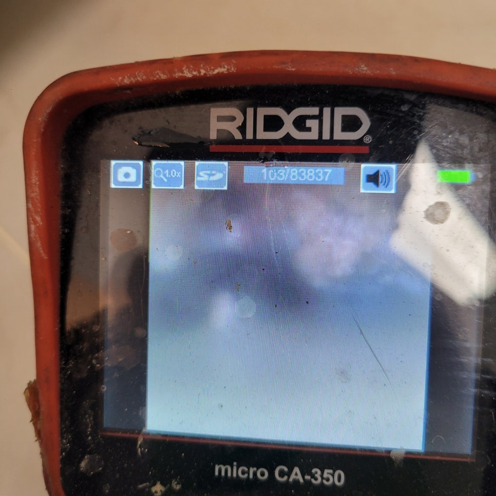
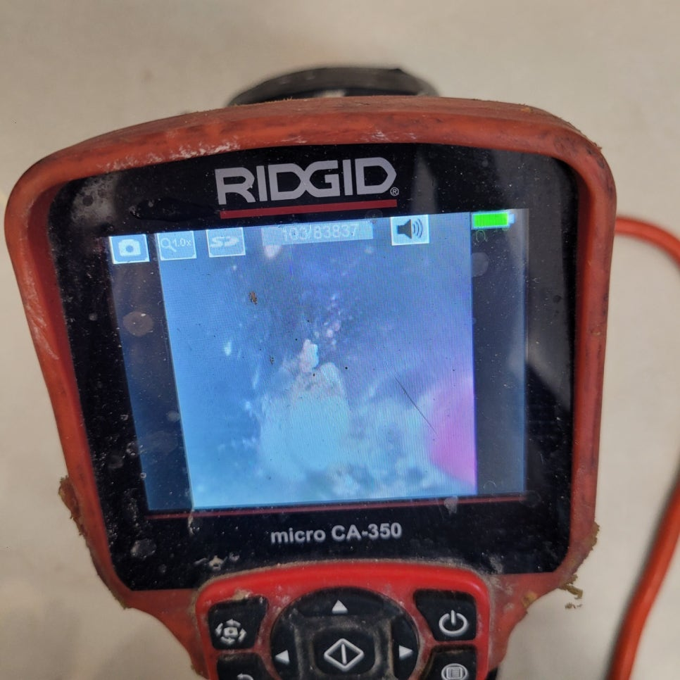
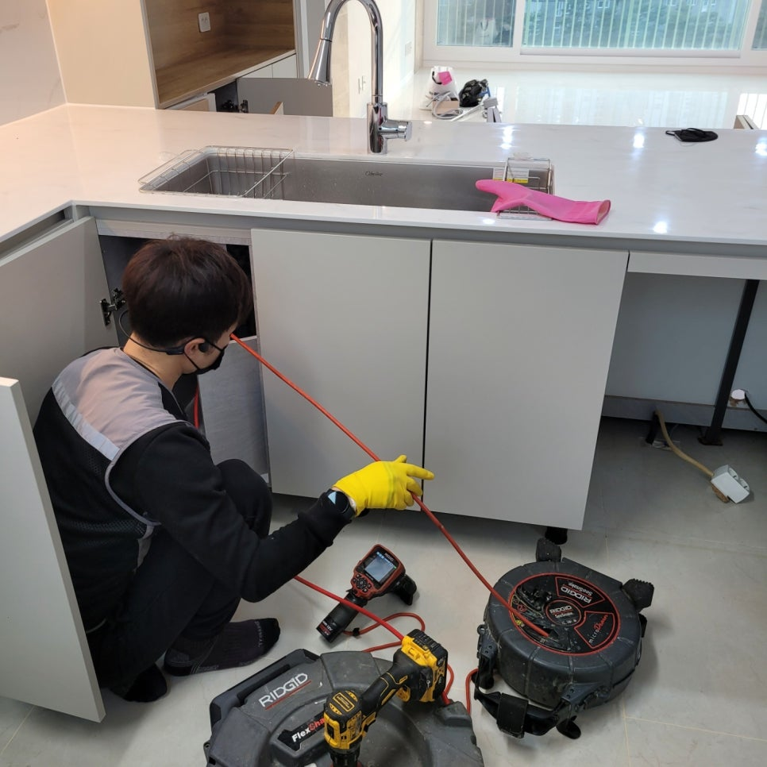
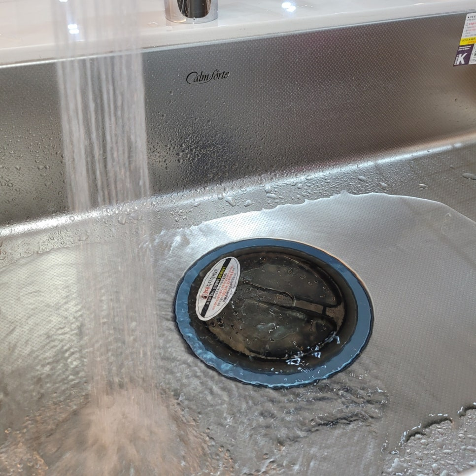

🏠 향남싱크대막힘 상신리 제암리 하수구업체 선택이 중요해요!
용인 향남 싱크대막힘 전문 시공 후기

📋 작업 개요
- 위치: 용인 향남, 향남, 용인
- 서비스 유형: 싱크대막힘, 하수구막힘, 배관막힘
- 작업 일시: 2023. 4. 28. 13:38
- 업체명: 하수구수사대 (010-5615-2118)
🔍 문제 상황
안녕하세요. 하수구수사대입니다.
일상 속에서 우리는 생활을 하면서 하루에도 여러 번 생활수를 버리면서 살아가고 있습니다. 우리가 사용한 생활수들 같은 경우는 모두 배관을 통해서 배출이 되고 있는데요. 그러므로 원활한 배관은 항상 막힘없이 돌아가야 하는 것이라고 할 수 있습니다.
하지만 갑작스럽게 어떤 원인으로 인해서 배관 막힘이 발생을 하게 되는 경우에는 누구나 당황스럽고 많은 불편함을 겪을 수밖에 없는데요. 이러한 갑작스러운 배관 막힘을 예방하기 위해서는 평소에도 정기적으로 전문 업체를 통해서 점검과 관리를 해주시는 것이 필요하다고 할 수 있습니다.
저희 하수구수사대에서는

🔎 원인 분석
💡 전문가 진단: 저희 하수구수사대에서는
배관 케어를 전문으로 하는 업체인 만큼 현장의 해결을 빠르게 하기 위해서 발 빠르게 움직이고 있는 곳입니다. 그래서 현장의 배관 막힘 후기를 통해서 함께 해결하는 과정을 알려드리는 시간을 가져보도록 하겠습니다.
이번에 배관 막힘 연락을 받고 방문을 한 현장은 향남싱크대막힘 상신리 제암리 하수구업체 연락을 주신 현장으로 다세대주택의 싱크대가 막히게 되면서 급하게 연락을 주신 곳이었습니다.
배관 막힘은
언제든지 발생을 할 수 있는 것인 만큼 이러한 막힘이 발생을 하게 되면 즉시 당황하지 마시고 전문 업체를 통해서 해결을 하시는 것이 빠르다고 할 수 있습니다. 배관 전문 업체 중에서도 전문 장비를 보유하고 있고 오랜 경력과 노하우를 가지고 있는 곳을 선택하시는 것이 필요한데요. 이러한 부분을 잘 확인하고 선택을 하시는 것이 좋습니다.

🔧 작업 과정
저희 하수구수사대에서는 현장에 의뢰를 받고 도착을 하게 되면 가장 먼저 배관 내시경 작업을 시작하게 되는데요.
배관 내시경 작업은
육안으로 볼 수 없는 배관 내부의 상황을 자세하게 보여줄 수 있는 장비이기 때문에 보다 정확한 원인 파악과 해결이 가능하다고 할 수 있습니다. 배관 내시경 장비는 고가의 장비로 전문 업체에서도 이러한 장비를 보유를 하고 제대로 원인을 진단해 줄 수 있는 곳이 좋습니다.
향남싱크대막힘 상신리 제암리 하수구업체 방문을 한 곳은 싱크대 막힘으로 고객님의 불편함이 큰 상황이었는데요. 빠른 원인 파악을 위해서 배관 내시경 작업을 시작하였습니다. 고객님께서는 어느 날부터 싱크대 하수구에서 계속해서 악취가 올라오다가 물이 원활하게 내려가지 않는 상황이 발생을 하게 되었다고 하셨는데요.
배수관의 상태가 점점 심해지면서 전문 업체로 연락을 주신 것이었습니다. 배관 내시경 작업을 해보니 내부에는 오래된 음식물 덩어리들이 붙어있는 것이 곳곳에 보였는데요. 이러한 이물질들은 모두 제거를 하는 것이 확실한 해결이 될 수 있는 것입니다.
저희는 오랜 노하우와 경력을 가지고 있는 배관 전문 업체인 만큼 배관에 손상을 주지 않고 상황에 맞는 빠른 해결을 할 수 있는 방법으로 작업을 해드리고 있습니다. 배관 막힘의 경우 어떤 상태인지를 파악하지 않고 이물질들을 밀어내게 되다 보면 배관의 또 다른 곳에서 막히게 될 수 있기 때문에 원인에 맞는 제거를 하는 것이 가장 좋은 방법이라고 할 수 있습니다.
현장의 배관의 크기와 두께를 고려해서 배관의 손상 없이 이물질을 제거를 할 수 있는 장비로 작업을 시작하였는데요. 내시경으로 내부의 상황을 확인하면서 이물질 제거 작업을 해서 빠르고 깔끔하게 해결을 하였습니다.


✅ 작업 완료
내시경으로 배관 내부의 이물질들이 제거가 된 것을 확인을 한 후
향남싱크대막힘 상신리 제암리 하수구업체 현장 주변의 마무리까지도 깔끔하게 정리를 해드렸습니다.




⚠️ 주방 싱크대 배관 막힘 예방 수칙
- ✅ 기름기가 묻은 식기나 프라이팬은 설거지 전 키친타올로 반드시 기름때를 닦아내세요.
- ✅ 주기적으로 싱크대 개수대에 뜨거운 물을 가득 받아 한 번에 내려 배관 내부 기름을 씻어내세요.
- ✅ 배수구 거름망을 미세한 필터로 사용하시고 음식물 찌꺼기가 틈으로 새어 들지 않게 관리하세요.
- ✅ 베이킹소다와 식초를 뜨거운 물과 함께 일주일에 한 번씩 부어주면 배관 살균과 막힘 예방에 좋습니다.
💡 핵심 정리
- 확실한 장비 작업(내시경 점검 및 샤프트 스케일링)으로 원인을 뿌리 뽑습니다.
- 작업 후 1년 이내에 동일한 부위 재발 시 100% 무상 A/S 서비스를 보장합니다.
- 서울 · 경기 · 인천 전 지역에 24시간 언제든 긴급 출동할 수 있도록 항시 대기 중입니다.
❓ 자주 묻는 질문 (FAQ)
🚨 용인 향남 싱크대막힘 문제로 고민이신가요?
정확한 원인 진단과 확실한 시공으로 재발 없는 해결을 약속드립니다.
24시간 긴급 출동 | 서울 · 경기 · 인천 전지역 | 1년 내 재발 시 무상 A/S